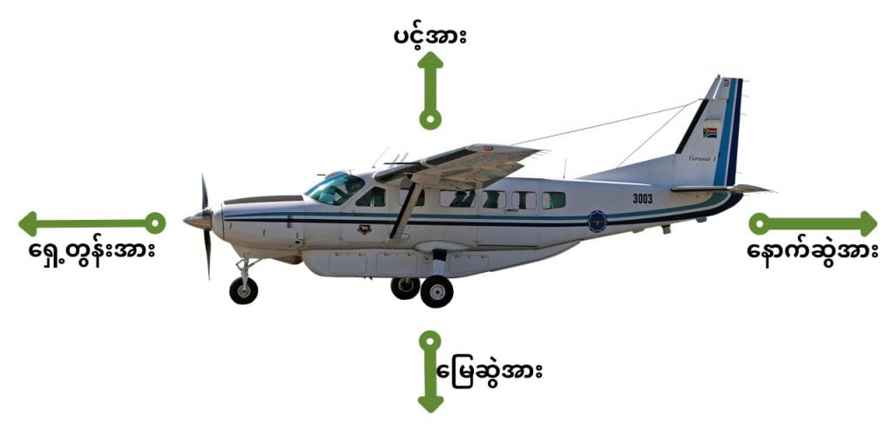
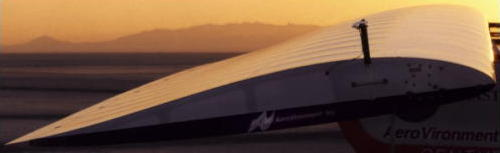
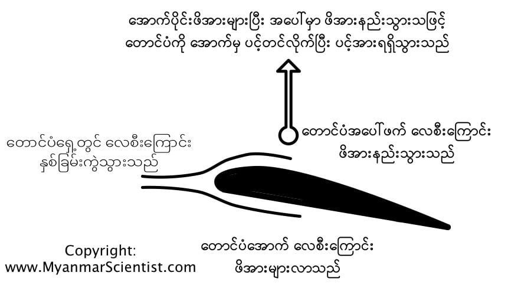

ဒါဆို ဒီလောက်လေးတဲ့ လေယဉ်ကြီး ဘယ်လိုလေပေါ်ပျံဝဲတက်သွားသလဲ။ မသိချင်ဘူးလား။
လေယာဉ်ပျံတက်တာ မြင်ဘူးကြတယ် မဟုတ်လား။ အသံအကျယ်ကြီး မြည်ပြီး တက်သွားတာလေ။ ဂျက်လေယာဉ်တွေဆို ပိုတောင် အသံကျယ်သေး။ ဒါဆိုလေယာဉ်ပျံရတာ အင်ဂျင်ကြောင့်ဆို ငြင်းချင်းကြ ပါသလား။
တကယ်တော့ လေယာဉ်ပျံရတာဟာ အင်ဂျင်ကြောင့်မဟုတ်ပါဘူး။ အင်ဂျင်က လေယာဉ်ပျံတက်ဖို့ လိုအပ်တဲ့ တွန်းအားကို ပေးတာဖြစ်ပေမယ့် တကယ်ပျံတက်ရတာကတော့ လေယာဉ်ရဲ့ အတောင်ပံ ကြောင့်ပါ။
အောက်ကပုံ (၁) ကို ကြည့်ရင် လေပေါ်ပျံနေတဲ့ လေယာဉ်ပေါ်မှာ သက်ရောက်နေတဲ့ အား ၄ မျိုးကို တွေ့ရမှာပါ။ (အောက်ကပုံမှာ ကြည့်ပါ)။
ပထမအားကတော့ လေယာဉ်ကို ရှေ့သွားလို့ မရအောင် ဆွဲထားတဲ့ နောက်ဆွဲအားပါ (drag) ပါ။ ဒီနောက်ဆွဲအားကို တွန်းကန်ပြီး လေယာဉ်ကို ရှေ့ကို သွားအောင် ဆွဲတာကတော့ ရှေ့တွန်းအား (thrust) ပါ။ ဒီ ရှေ့တွန်းအားကို လေယာဉ်ရဲ့ အင်ဂျင်ကနေ ပေးတာပါ။ ပန်ကာလေယာဉ်ဆို အင်ဂျင်က ပန်ကာကို လည်ပြီး လေယာဉ်ကို ရှေ့ကို တွန်းပေးပါတယ်။ ဂျက်အင်ဂျင်ဆို လေကို ပူအောင်လုပ်ပြီး အနောက်ကို မှုတ်ထုတ်ခြင်းအားဖြင့် လေယာဉ်ရဲ့ ရှေ့တွန်းအားကို ဖြစ်စေပါတယ်။ ဒါက လေယာဉ်ရဲ့ ရှေ့နဲ့ နောက်မှာ သက်ရောက်တဲ့ အားတွေဖြစ်ပါတယ်။

ဒါဆို ဒီပင့်တင်အားဟာ လေယာဉ်ပျံရတဲ့ အဓိက အကြောင်းရင်း ဖြစ်ပါတယ်။ ဒီပင့်တင်အားကို ဘယ်လိုဖြစ်စေလဲ ကြည့်ကြရအောင်။ ဒီပင့်တင်အားကို ဖြစ်စေဖို့ဟာ လေယာဉ်တောင်ပံရဲ့ ပုံစံဟာ အရေးကြီးပါတယ်။ အောက်ကပုံ (၂) မှာကြည့်ရင် လေယဉ်တောင်ပံ တစ်ခုရဲ့ ပုံစံကို မြင်ရမှာပါ။ ဒီပုံမှာ တောင်ပံရဲ့ အောက်ဖက်က ပြားနေပြီး အပေါ်ဖက်က ခုံးနေတာ တွေ့ရမှာ ဖြစ်ပါတယ်။ ဒါ့အပြင် တောင်ပံ အရှေ့ပိုင်းက လုံးနေပြီး အနောက်ပိုင်းကတော့ ချွန်နေတာကိုလဲ တွေ့ရမှာ ဖြစ်ပါတယ်။

မိုင်းခွဲခံရတဲ့ မြန်မာ့လေကြောင်းက လေယာဉ်
ပုံ (၃) မှာ လေယာဉ်တောက်ပံပေါ်မှာ လေရဲ့ တွန်းကန်အား ဘယ်လို ဖြစ်လာလဲဆိုတာ ပြထားပါတယ်။ လေယာဉ်တောင်ပံရဲ့ အရှေ့မှာ လေစီးကြောင်းဟာ နှစ်ခုကွဲသွားပါတယ်။ တောင်ပံရဲ့ ပုံစံနဲ့ စောင်းထားတဲ့ အနေအထားတွေကြောင့် အောက်ကလေစီးကြောင်းဟာ ဖိအားများလာပြီး အပေါ်က လေစီးကြောင်းကတော့ ဖိအားနဲ့သွားပါတယ်။
ဒီလိုအောက်က ဖိအားများပြီး အပေါ်က ဖိအားနည်းသွားတဲ့ အတွက် တောင်ပံကို အောက်က ပင့်တင်တဲ့ ပင့်အား ရရှိလာပါတယ်။ အောက်ကပင့်တင်အားက လေယာဉ်ရဲ့ အောက်ဆွဲအား (အလေးချိန်) ထက်များသွားရင် လေယာဉ်ဟာ အပေါ်ကို ပျံတက်လို့ သွားပါတယ်။
ကျွန်တော်တို့ ငယ်ငယ်က စက္ကူလေးတွေ ခေါက်ပြီး လေယာဉ်လွှတ်တမ်း ကစားသလိုပေါ့။ အတောင်ပံပေါ် သက်ရောက်တဲ့ ပင့်အားကြောင့် လေယာဉ်က အပေါ်ကို တက်သွားရတာ ဖြစ်ပါတယ်။
လေယာဉ် အရှိန် မြန်ရင် မြန်သလို အတောင်ပံပေါ် ပင့်တဲ့ လေပင့်အားလဲ များပါတယ်။ ဒါ့ကြောင့် လေယာဉ်တွေဟာ ပျံတက်ခါနီး ပြေးလမ်းပေါ်မှာ အရှိန်ယူပြီး ပြေးတက်ရတာ ဖြစ်ပါတယ်။ လုံလောက်တဲ့ အရှိန်မရရင် လေယာဉ်လဲ ပျံတက်နိုင်မှာ မဟုတ်ပါဘူး။
လေယာဉ် ပြေးလမ်းပေါ်က ပျံမတက်နိုင်လို့ ပြေးလမ်းအဆုံးမှာ ပျက်ကျသွားတယ် ဆိုတဲ့ သတင်းမျိုးတွေ ကြားဖူးကြမှာပါ။

လေယာဉ် ဘယ်လို ကွေ့သလဲလေထဲမှာ လေယာဉ်ကွေ့တာ မြေပြင်ပေါ်မှာကားကွေ့သလိုမျိုး ဘီးကိုလှည့်ပြီး ကွေ့လို့ မရပါဘူး။ ဒီတော့ လေယာဉ်ကွေ့ဖို့အတွက် တောင်ပံက တက်မကို သုံးရပါတယ်။ လေယာဉ်ရဲ့ နောက်မြှီးမှာ ထောင်လိုက်ရှိနေတဲ့ တောင်ပံဟာ လေယာဉ်ရဲ့ တက်ပါပဲ။ သင်္ဘောတွေ မှာရှိတဲ့ တက်မနဲ့ သဘောအတူတူပါပဲ။ လေယာဉ်ပျံနေချိန်မှာ ဒီတက်မကို ဘယ်ညာ လှည့်ပေးခြင်းဖြင့် လေယာဉ်ကို ကွေ့ပေးတာပါ။
Ref: Airplanes